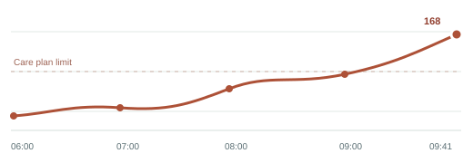

Maya Chen MS-2048
Metabolic syndrome monitoring
- Age
- 54 years
- Program
- Metabolic health
- Care team
- Northside Clinic
- Monitoring
- Daily, remote
- Started
- 03 Sep 2026
Glucose reading needs reviewAbove this patient's configured care plan range.
Review trend
Blood glucose
GLU-02 · Last 4 hours
Latest reading
168mg/dL
Care plan limit140 mg/dL
The latest sample is above the configured range for this sample patient.

Current measurements
5 sensors · Recorded 09:38–09:42
| Measurement | Reading | Status | Time |
|---|---|---|---|
| Body temperatureTMP-01 | 36.7 °C | Within range | |
| Heart rateHR-03 | 76 bpm | Within range | |
| Blood pressureBP-04 | 118/76 mmHg | Within range | |
| ECG signalECG-05 | 98 % quality | Signal stable |
Recent checks
20 Sep 2026| Time | Sensor | Reading | Status |
|---|---|---|---|
| 09:42 | Heart rate | 76 bpm | Within range |
| 09:41 | Blood glucose | 168 mg/dL | Needs review |
| 09:40 | Body temperature | 36.7 °C | Within range |
| 09:38 | Blood pressure | 118/76 mmHg | Within range |
Sample record. This page uses fictional patient data for an HTML and CSS project. Values do not update from real medical devices.